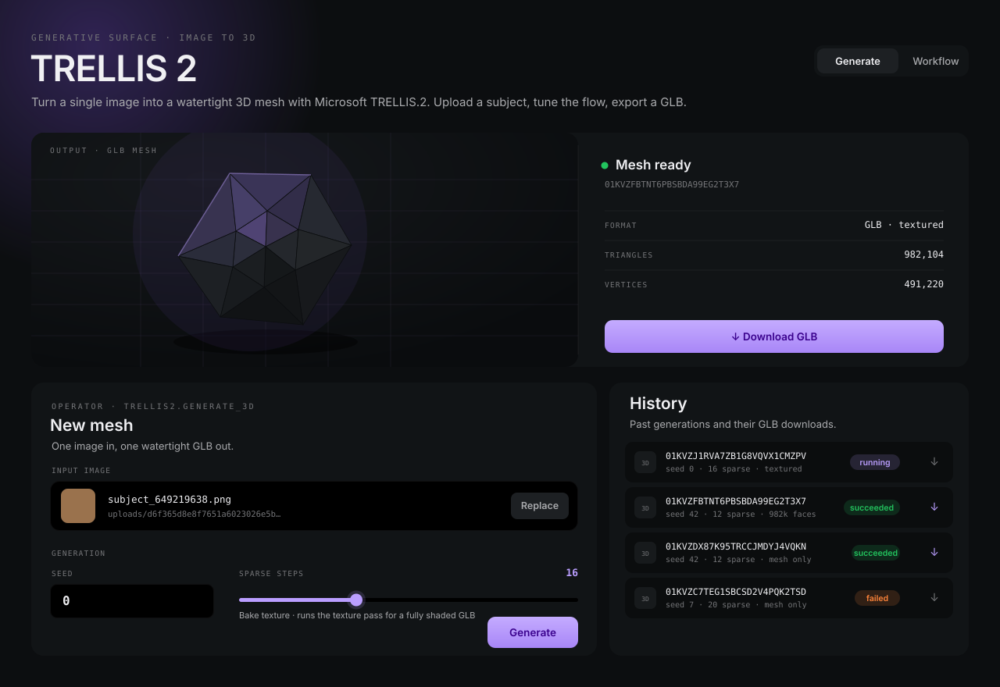

Turn a single image into a watertight 3D mesh with Microsoft TRELLIS.2 — orbit the result in
an in-browser preview and export a GLB, all on a local GPU. This is a static showcase of the
live nexus.3d.trellis2 extension surface.
